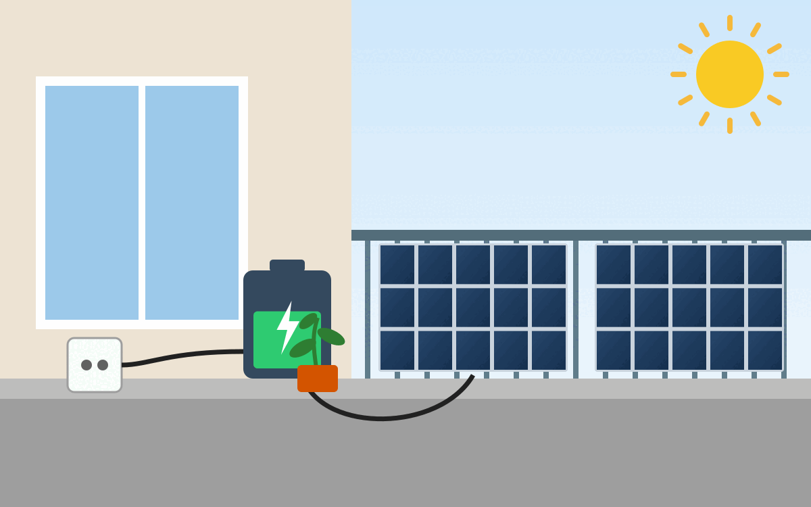

Ich habe eine Steckersolaranlage, welche ab ca. April regelmäßig mittags mehr Strom produziert als ich verbrauche. Daher überlege ich mir, eine Batterie anzuschaffen, um den Strom flexibler nutzen zu können.
{kind=link}

Modelle
| Modell | Preis | Kapazität | Maximale Erweiterbarkeit | Maximale Leistung (Ausgang) | Technologie | Outdoor | Maße | PV-Eingänge | Weiteres |
|---|---|---|---|---|---|---|---|---|---|
| EcoFlow STREAM AC Pro | 750€ | 1.9 kWh | 11.4kWh (6 Geräte) | 1200 W (kombiniert 2300 W) | LFP (4000 Zyklen) | IP65 | 255 × 254 × 458 mm (21.5 kg) | 1× 500 W max., 11 - 60 V (130 Min) | Hat USB-A- und USB-C-Ausgänge, kann auch übers Auto geladen werden ... macht eher den Eindruck einer Camping-Lösung |
| Marstek Solarbank B2500-D | 380€ | 2.2 kWh | 6.7 kWh (3 Geräte) | 800W | LiFePO4 (6000 Zyklen) | IP65 | T295 × B175 × H350mm (20kg) | 2× 12V~59V, 13.5 A, 800W MAX | ? |
| Growatt Noah 2000 | 1000€ (ausverkauft) | 2.0 kWh | ? (stapelbar) | 800W | LFP (6000 Zyklen) | IP66 | T235 × B406 × H270mm (23kg) | 2× 16 - 60 V⎓, 26 A, 900 W MAX | ? |
Rentabilität berechnen
Im Grunde ist das ganz einfach. Es muss gelten:
Gewinn in der Lebenszeit = 0.9 · Zyklen in der Lebenszeit · Kapazität in kWh · Preis pro kWh - Anschaffungspreis
Bei dem Marstek Solarbank B2500-D
0.9 · 6000 · 2.2 kWh · 0.25 €/kWh - 380€ = 2590 €
Umso größer das Ergebnis, desto besser.
$$ \begin{align} \text{Amortisationszeit in Jahren} & = \frac{\text{Anschaffungspreis}}{\text{Ersparnis pro Jahr}} \ & = \frac{\text{Anschaffungspreis}}{\text{Jährlicher Überschuss in kWh} \cdot \text{Preis pro kWh}} \end{align} $$
In meinem Fall habe ich eine Ersparnis von 208kWh/Jahr · 0.25€/kWh = 52€/Jahr. Der Akku sollte also definitiv nicht mehr als 624€ kosten, damit er sich innerhalb von 12 Jahren amortisieren kann.
Oder auch:
$$ \begin{align} \text{Lebenszeit in Jahren} & = \frac{\text{Zyklen} \cdot \text{Kapazität [kWh]}}{\text{Überschuss [kWh/Jahr]}} \ & = \frac{6000 \cdot 2.2 \text{ kWh}}{208 \text{ kWh/Jahr}} \ & = 63 \text{ Jahre} \end{align} $$